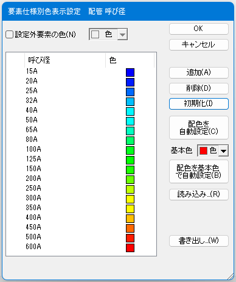
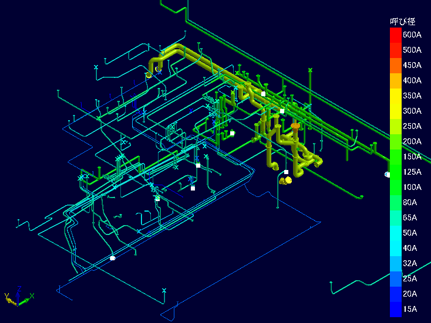
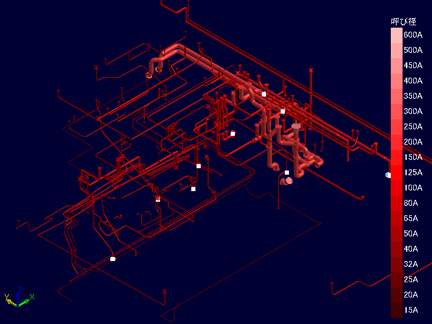
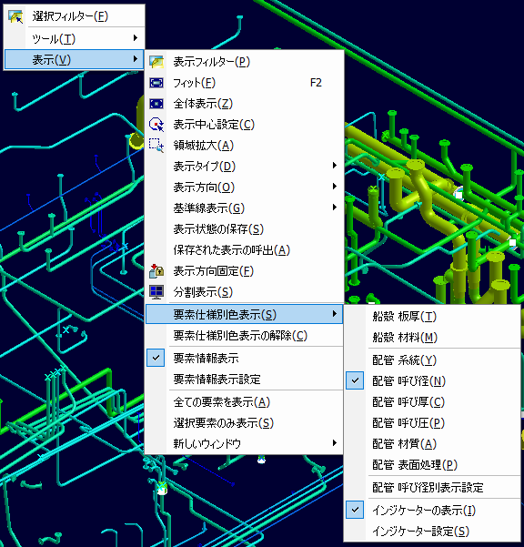

この設定を利用することで、要素の表示色を板厚や材質、配管系統や呼び径などの各種仕様に基づいたものに変更できます。
設定内容はCSVファイルに保存しておいて別のドキュメントで再利用することができます。
船殻要素は
配管要素は
によって色を変えて表示することができます。
色を割り当てたい仕様をリストから選んだら、右側の「設定」ボタンをクリックします。最初は空のリストが表示されます。「初期化」ボタンをクリックすると、以下の例のようにシステムが自動的に色を割り当てます。

この状態でOKをクリックし、さらにオプションダイアログでOK/適用をクリックすれば、以下のような表示となります。

同系色のみ使用したい場合は、基本色を選択し、「配色を基本色で自動設定」をクリックします。

オプションダイアログで設定を入力してあれば、コンテキストメニューを利用して手軽に設定を切り替えることもできます。
